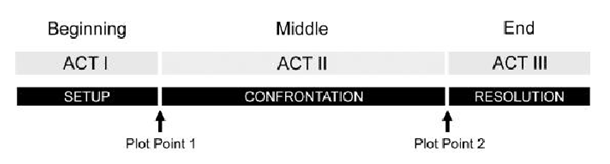
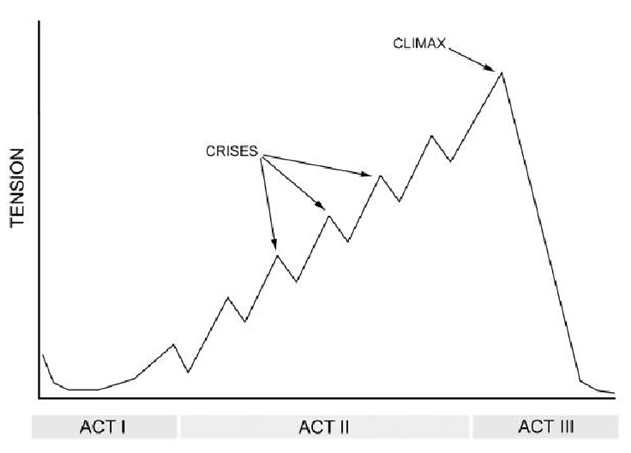
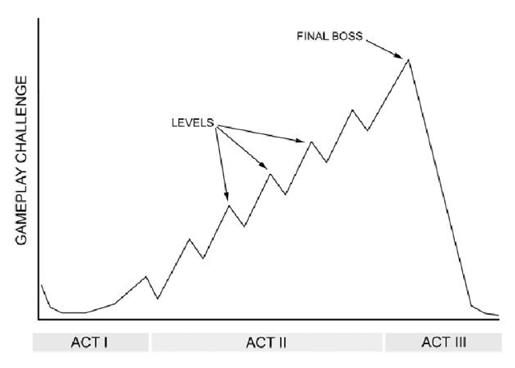

The fuel of fiction is conflict.
What is conflict?
Someone wants or needs something, but someone or something stands in the way.
Some are physical conflicts, while others are social or emotional.
Without an unresolved conflict fueling the experience,
the audience perceives they are no in an actual story.
THey will very quickly lose patience and interest, and
then you will lose them.
Conflict is also the fuel of gameplay.
A challenge with goals and obstacles is placed before the player.
A game with no challennges, goals or obtacles can hardly be called a game,
any more than a story without conflict can be called a story.
It is compelling to watch someone try to resolve conflicts (as in books, TV, movies, etc) and it is potentially even more compelling to feel like you really are that conflict-resolving character (as in games).
Without a want/but, there is no conflict. Without a conflict,
there are no obstacles. Without obstacle, there is neither a
story nor a game.
Conflicts is essential to both.
For better or worse, we as humans are better able to emotionally relate to a single person than to a thousand or a mllion. Seein a single person in pain will evoke a stronger emotional response than watching a planet full of people explode.
So remember-always have conflict. And only make the scope of the conflict as large as it needs to be, no larger.
Story is conflict
The 3 Act Structure: it is used in plays, movies, books, and games.
Ways back in 335 BC by Aristotle in his Poetics: "A whole is what has a beginning and middle and end".
Why it is needed?
In order to understand any change, we need to have a clear picture of the before
as well as the after, a great example, weight-loss ads.
The hero often is in charge of improve himself and those around him.
Why will he care enough to try?
Most of the times because he is the the good one
or his env is bad enough that requires struggle to improve it.
There is an incident that introduces the hero to the main conflict.
It's time to start seeing what kinds of obstacles the protagonist will confront and how he'll manage to overcome them.
Main conflict normally takes the form of a villain, the antagonist supported by its minions.
This part is bigger thant the others, about twice, sometimes it gets
hard to handle its structure, planning and pacing. Author can lose
momentum easily.
Gurus split it in 2 halves, separated by a midpoint (of the act and the
story) at which things spin in a new direction.
Act 2 sees progressively increasing tension, drama and stakes (rising action) and culminates with Hero finally understanding and seeing the path to resolving the conflict.
This is the big finale, what the audience has been itching to experience ever since the conflict was first introduced to find out "what happens".
The Hero makes his ultimate effort to resolve the conflict and either succeeds (happy ending) or fails (sad ending).
Sad or down endings in mainstream are rare because they break expectations and can leave audience members feeling disappointed, agry or even depressed.
Even when the protagonist is not hero but villain, the happy ends means he gets away with it, for example the netflix serie You
Happy or up endings tend to evoke a positive reaction, but only if you give the audience what they wanted, but not the way they expected it.
Once conflict is resolved, the story needs to end before things grind to a complete halt and audience gets bored.
We often don't experience any kind of puase or indication we are transitioning from act to act. Even in novels, chapters not indicate a act transition.

The two breaks between three acts are colled Plot Points
In plot point 2, the protagonist has had some kind of epiphany and at last knows what he needs to do.
The level of tension as felt by the audience is a good metric of conflict and pacing, can be counted on to predict how engaging the story is likely to be to the audience at any given moment.

Look at how tension levels generally looks like.
Each spike in Act 2 is a crisis, and the biggest crisis of all is the climax (in Act 3).
Each spike starts by setting up a sub-conflict, which causes tension to escalet as the Hero tries to overcome it, and concludes wtih a tension relaxation once the sub-conflict is resolved.
Some examples:

Tension in video games graph.
While traditional story audiences (novels, movies, comics, books
and plays) come into the experience with a certain degree of
patience, they tolerate a 25% or more of initial setup.
Video game players expect to play within seconds, or at most
after a minute or two, that means overcoming obstacles related
to the conflict.
First gameplay minutes need to be very compelling indeed, to convince players they want to stay awhile.
Game designers jump straight to the introduction of the main
conflict. So Act 1 is only a few seconds or absent.
examples:
The counter example: Valve's Half-Life
Half-Life Walkthroug
It is a sample that some g amers are willing and able to handle a low
or no-confilct beginning.